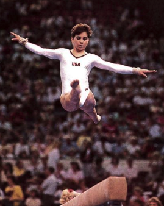

Christie Henrich (USA)
1987 Gander Memorial AA Bronze Medalist
1989 World Championships Participant

Christy was born on July 18, 1972 and trained with Al Fong at Great American Gymnastics Express. Her goal was to make an Olympic team and she came close in 1988, finishing less than 0.4 points from sixth place. The following year, she was a member of the world championships team where she qualified for UB finals and finished fourth. She began battling eating disorders starting around this time, which eventually led to her death in 1994 at the age of 22.
Competition Results
1983
MO Class II Championships (children): 1st AA
1984
Dragon Invitational (Class II, age 9-11): 2nd Team, 2nd AA
MO Class II Championships (children): 2nd AA
Region 4 Championships (class I, 11-under): 1st Team, 1st AA
1985
Jr. JO Nationals: 49th AA
US Classic (Children's Division): 16th AA
USA Championships (Children's Division): 25th AA
1986
Aloha Gymfest: 2nd AA (club division)
Canadian Classic: 8th AA
Jr. American Classic: 17th AA
Jr. US Championships: 5th AA
US Olympic Festival: 15th AA
1987
DTB Cup: 6th UB
Gander Memorial: 3rd AA
US Championships: 14th AA
World Sports Fair: 8th AA
1988
American Classic: 4th AA
Dragon Invitational: 1st AA
Hungarian International: 14th AA, 6th FX
USA Championships: 10th AA, 3rd UB
US Classic: 4th AA
US Olympic Trials: 9th AA
1989
Capitol Cup: 2nd AA, 1st V, 1st UB
Dragon Invitational: 1st AA
Parkette Invitational: 1st AA, 1st V, 1st UB, 2nd B, 2nd FX
USA Championships: 2nd AA, 2nd UB, 2nd B, 3rd FX, 5th V
USA World Trials: 3rd AA
World Championships: 4th Team, 4th UB
1990
USA Championships: 10th AA, 2nd UB, 5th B
This page was created on December
17, 2000 and was last updated on July 19, 2021.
© Gymn Forum